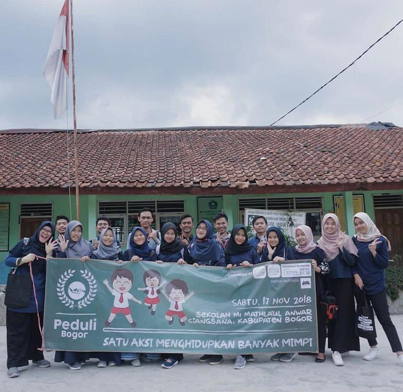
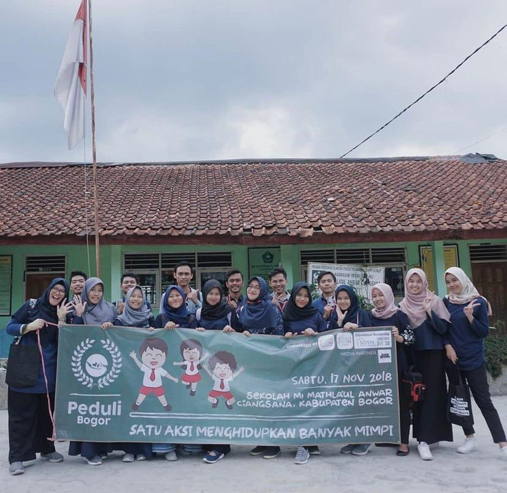

SITI ANGGRAINI ALFATIHAH
FRONTEND DEVELOPER
Seorang fresh graduate yang tertarik mengembangkan karir di bidang IT khususnya pengembangan website yaitu pada bagian frontend. Saya termotivasi untuk mengasah dan mengaplikasikan ilmu yang saya miliki di lingkungan IT Perbankan. Saya sangat antusias untuk belajar hal baru, teliti, jujur, bertanggung jawab, dan dapat bekerja sama dalam tim.
CONTACT
- +62 82154845311
- sitianggrainialf@gmail.com
- Jl.Tjilik Riwut Gg.Manunggal 1A No.171
- Kuala Kapuas, Kalimantan Tengah
EDUCATION
Universitas Gunadarma Depok/Jakarta
Teknik Informatika Agustus 2016 - 2020
- Asisten Laboratorium Teknik Informatika
- Lulus dengan predikat pujian IPK > 3.5
SMAN 1 Kuala Kapuas
Jurusan IPA 2013-2016
EXPERIENCE
 

Badan Perencanaan Pembangunan Daerah Kapuas
2021-Sekarang
Staff
Berperan dan bertanggung jawab untuk membantu pekerjaan pemerintah daerah khususnya pada BAPPEDA dalam mengelola sistem aplikasi daerah seperti KRISNA DAK, SiRUP LKPP dan E-SAKIP Kabupaten Kapuas.
IYOIN Bogor
2018
Volunteer
Bertanggung jawab dalam mempersiapkan bahan dan materi ajar untuk mengajar pada event yang diadakan oleh IYOIN yaitu Peduli Bogor di sekolah MI Mathla'ul Anwar, Ciangsana.
Laboratorium Teknik Informatika
2017-2019
Asisten
Berperan dan bertanggung jawab sebagai asisten mengajar untuk mata praktikum Sistem Informasi Akuntansi, Algoritma Pemrogramman 1 dan 2, Sistem Informasi, Perencanaan dan Analisis Algoritma.